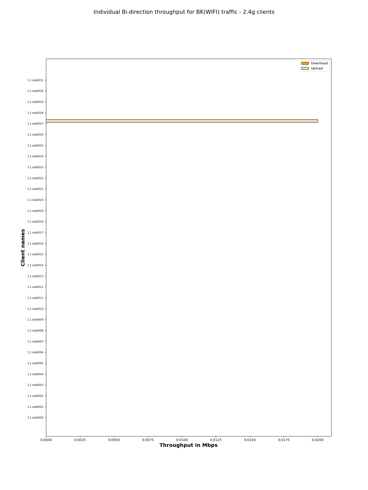
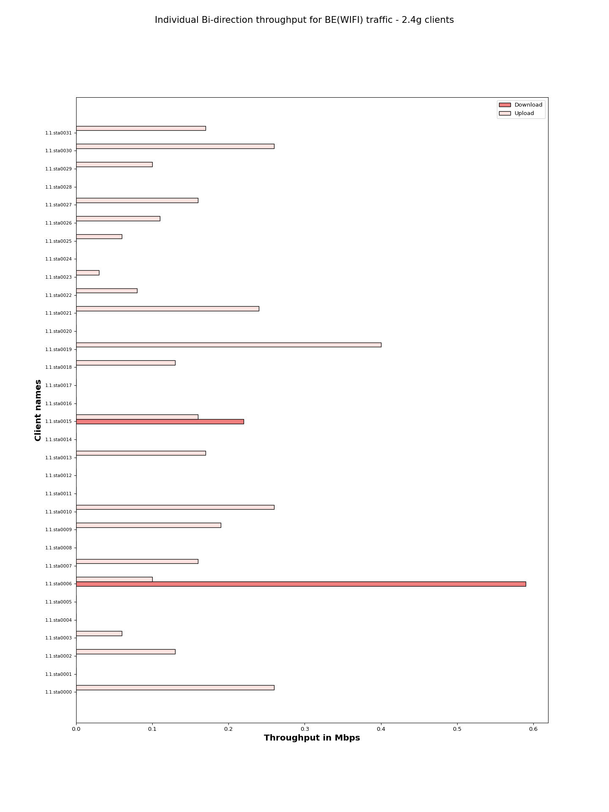
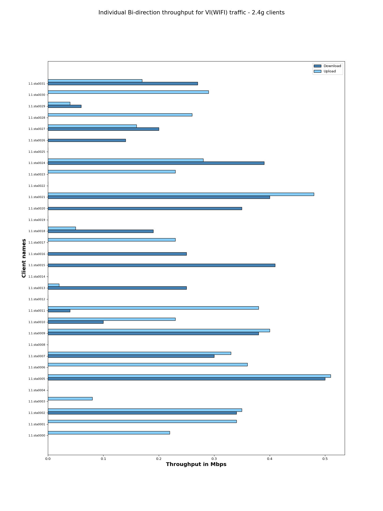
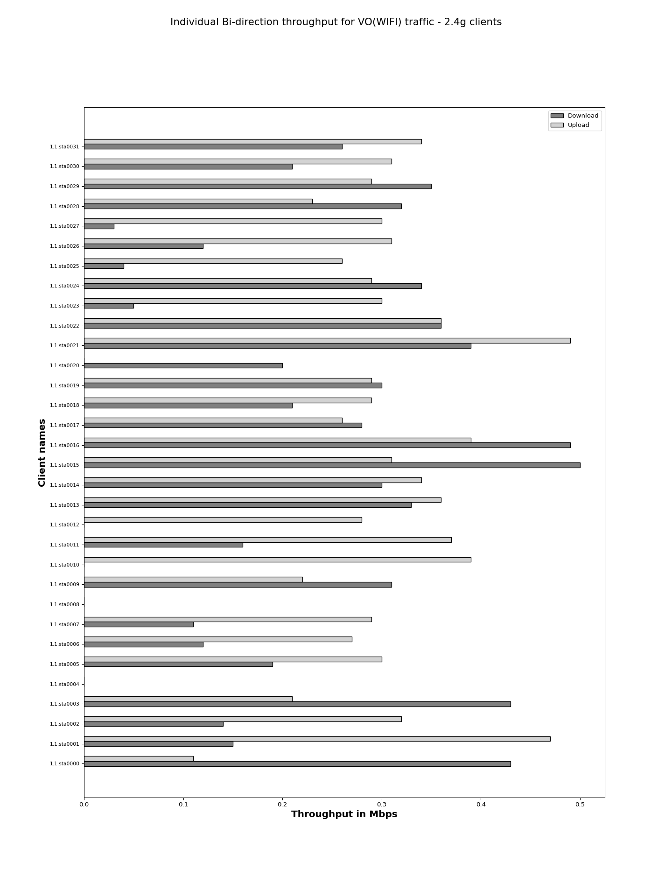

The objective of the QoS (Quality of Service) traffic throughput test is to measure the maximum achievable throughput of a network under specific QoS settings and conditions.By conducting this test, we aim to assess the capacity of network to handle high volumes of traffic while maintaining acceptable performance levels,ensuring that the network meets the required QoS standards and can adequately support the expected user demands.
| Test Configuration |
|
||||||||||||||||||||||||||||||||||||||||||||||||||||
| No of Stations | Throughput for Load 100.0 Mbps-upload | Throughput for Load 1.0 Mbps-download |
|---|---|---|
| 32 | BK : 0.02, BE : 3.23, VI: 5.41, VO: 8.95 | BK : 0.0, BE : 0.81, VI: 4.57, VO: 7.12 |
The below graph represents overall Bi-direction throughput for all connected stations running BK, BE, VO, VI traffic with different intended loads per station – 1.0 Mbps-download

The below graph represents individual throughput for 32 clients running BK (WiFi) traffic. Y- axis shows “Client names“ and X-axis shows “Throughput in Mbps”.

| Client Name | Mac | Channel | SSID | Type of traffic | Traffic Direction | Traffic Protocol | Offered upload rate(Mbps) | Offered download rate(Mbps) | Observed upload rate(Mbps) | Observed download rate(Mbps) | Observed Upload Drop (%) | Observed Download Drop (%) |
|---|---|---|---|---|---|---|---|---|---|---|---|---|
| 1.1.sta0000 | 04:f0:21:89:62:f4 | 11 | NETGEAR_2G_wpa2 | Background | Bi-direction | UDP | 100.0 Mbps | 1.0 Mbps | 0.00 | 0.0 | 99.953637 | 97.541860 |
| 1.1.sta0001 | 04:f0:21:89:a2:f4 | 11 | NETGEAR_2G_wpa2 | Background | Bi-direction | UDP | 100.0 Mbps | 1.0 Mbps | 0.00 | 0.0 | 99.946096 | 99.465241 |
| 1.1.sta0002 | 04:f0:21:89:73:f4 | 11 | NETGEAR_2G_wpa2 | Background | Bi-direction | UDP | 100.0 Mbps | 1.0 Mbps | 0.00 | 0.0 | 99.947016 | 99.625635 |
| 1.1.sta0003 | 04:f0:21:89:24:f4 | 11 | NETGEAR_2G_wpa2 | Background | Bi-direction | UDP | 100.0 Mbps | 1.0 Mbps | 0.00 | 0.0 | 99.911726 | 97.458534 |
| 1.1.sta0004 | 04:f0:21:89:69:f4 | 11 | NETGEAR_2G_wpa2 | Background | Bi-direction | UDP | 100.0 Mbps | 1.0 Mbps | 0.00 | 0.0 | 99.946930 | 100.000000 |
| 1.1.sta0005 | 04:f0:21:89:3e:f4 | 11 | NETGEAR_2G_wpa2 | Background | Bi-direction | UDP | 100.0 Mbps | 1.0 Mbps | 0.00 | 0.0 | 99.917206 | 99.651910 |
| 1.1.sta0006 | 04:f0:21:89:67:f4 | 11 | NETGEAR_2G_wpa2 | Background | Bi-direction | UDP | 100.0 Mbps | 1.0 Mbps | 0.00 | 0.0 | 99.935021 | 98.320693 |
| 1.1.sta0007 | 04:f0:21:89:04:f4 | 11 | NETGEAR_2G_wpa2 | Background | Bi-direction | UDP | 100.0 Mbps | 1.0 Mbps | 0.00 | 0.0 | 99.941929 | 99.539379 |
| 1.1.sta0008 | 04:f0:21:89:b6:f4 | 11 | NETGEAR_2G_wpa2 | Background | Bi-direction | UDP | 100.0 Mbps | 1.0 Mbps | 0.00 | 0.0 | 99.938090 | 99.141592 |
| 1.1.sta0009 | 04:f0:21:89:92:f4 | 11 | NETGEAR_2G_wpa2 | Background | Bi-direction | UDP | 100.0 Mbps | 1.0 Mbps | 0.00 | 0.0 | 99.894414 | 99.386724 |
| 1.1.sta0010 | 04:f0:21:89:cf:f4 | 11 | NETGEAR_2G_wpa2 | Background | Bi-direction | UDP | 100.0 Mbps | 1.0 Mbps | 0.00 | 0.0 | 99.917739 | 99.143218 |
| 1.1.sta0011 | 04:f0:21:89:94:f4 | 11 | NETGEAR_2G_wpa2 | Background | Bi-direction | UDP | 100.0 Mbps | 1.0 Mbps | 0.00 | 0.0 | 99.934454 | 99.386558 |
| 1.1.sta0012 | 04:f0:21:89:71:f4 | 11 | NETGEAR_2G_wpa2 | Background | Bi-direction | UDP | 100.0 Mbps | 1.0 Mbps | 0.00 | 0.0 | 99.927171 | 99.639217 |
| 1.1.sta0013 | 04:f0:21:89:79:f4 | 11 | NETGEAR_2G_wpa2 | Background | Bi-direction | UDP | 100.0 Mbps | 1.0 Mbps | 0.00 | 0.0 | 99.936601 | 98.718412 |
| 1.1.sta0014 | 04:f0:21:89:fd:f4 | 11 | NETGEAR_2G_wpa2 | Background | Bi-direction | UDP | 100.0 Mbps | 1.0 Mbps | 0.00 | 0.0 | 99.949597 | 100.000000 |
| 1.1.sta0015 | 04:f0:21:89:0e:f4 | 11 | NETGEAR_2G_wpa2 | Background | Bi-direction | UDP | 100.0 Mbps | 1.0 Mbps | 0.00 | 0.0 | 99.964467 | 99.241603 |
| 1.1.sta0016 | 04:f0:21:89:12:f4 | 11 | NETGEAR_2G_wpa2 | Background | Bi-direction | UDP | 100.0 Mbps | 1.0 Mbps | 0.00 | 0.0 | 99.908236 | 97.985365 |
| 1.1.sta0017 | 04:f0:21:89:a3:f4 | 11 | NETGEAR_2G_wpa2 | Background | Bi-direction | UDP | 100.0 Mbps | 1.0 Mbps | 0.00 | 0.0 | 99.941845 | 98.743219 |
| 1.1.sta0018 | 04:f0:21:89:98:f4 | 11 | NETGEAR_2G_wpa2 | Background | Bi-direction | UDP | 100.0 Mbps | 1.0 Mbps | 0.00 | 0.0 | 99.934500 | 100.000000 |
| 1.1.sta0019 | 04:f0:21:89:38:f4 | 11 | NETGEAR_2G_wpa2 | Background | Bi-direction | UDP | 100.0 Mbps | 1.0 Mbps | 0.00 | 0.0 | 99.937679 | 99.927589 |
| 1.1.sta0020 | 04:f0:21:89:a0:f4 | 11 | NETGEAR_2G_wpa2 | Background | Bi-direction | UDP | 100.0 Mbps | 1.0 Mbps | 0.00 | 0.0 | 99.935382 | 98.233696 |
| 1.1.sta0021 | 04:f0:21:89:eb:f4 | 11 | NETGEAR_2G_wpa2 | Background | Bi-direction | UDP | 100.0 Mbps | 1.0 Mbps | 0.00 | 0.0 | 99.910798 | 99.456571 |
| 1.1.sta0022 | 04:f0:21:89:bc:f4 | 11 | NETGEAR_2G_wpa2 | Background | Bi-direction | UDP | 100.0 Mbps | 1.0 Mbps | 0.00 | 0.0 | 99.932424 | 99.121138 |
| 1.1.sta0023 | 04:f0:21:89:76:f4 | 11 | NETGEAR_2G_wpa2 | Background | Bi-direction | UDP | 100.0 Mbps | 1.0 Mbps | 0.00 | 0.0 | 99.982115 | 100.000000 |
| 1.1.sta0024 | 04:f0:21:89:6f:f4 | 11 | NETGEAR_2G_wpa2 | Background | Bi-direction | UDP | 100.0 Mbps | 1.0 Mbps | 0.00 | 0.0 | 99.967406 | 99.673143 |
| 1.1.sta0025 | 04:f0:21:89:d8:f4 | 11 | NETGEAR_2G_wpa2 | Background | Bi-direction | UDP | 100.0 Mbps | 1.0 Mbps | 0.00 | 0.0 | 99.962015 | 98.735214 |
| 1.1.sta0026 | 04:f0:21:89:f2:f4 | 11 | NETGEAR_2G_wpa2 | Background | Bi-direction | UDP | 100.0 Mbps | 1.0 Mbps | 0.00 | 0.0 | 99.922708 | 98.514443 |
| 1.1.sta0027 | 04:f0:21:89:f1:f4 | 11 | NETGEAR_2G_wpa2 | Background | Bi-direction | UDP | 100.0 Mbps | 1.0 Mbps | 0.02 | 0.0 | 99.947374 | 100.000000 |
| 1.1.sta0028 | 04:f0:21:89:e5:f4 | 11 | NETGEAR_2G_wpa2 | Background | Bi-direction | UDP | 100.0 Mbps | 1.0 Mbps | 0.00 | 0.0 | 99.967059 | 98.757821 |
| 1.1.sta0029 | 04:f0:21:89:c3:f4 | 11 | NETGEAR_2G_wpa2 | Background | Bi-direction | UDP | 100.0 Mbps | 1.0 Mbps | 0.00 | 0.0 | 99.945006 | 99.501753 |
| 1.1.sta0030 | 04:f0:21:89:55:f4 | 11 | NETGEAR_2G_wpa2 | Background | Bi-direction | UDP | 100.0 Mbps | 1.0 Mbps | 0.00 | 0.0 | 99.935375 | 100.000000 |
| 1.1.sta0031 | 04:f0:21:89:88:f4 | 11 | NETGEAR_2G_wpa2 | Background | Bi-direction | UDP | 100.0 Mbps | 1.0 Mbps | 0.00 | 0.0 | 99.931156 | 100.000000 |
The below graph represents individual throughput for 32 clients running BE (WiFi) traffic. Y- axis shows “Client names“ and X-axis shows “Throughput in Mbps”.

| Client Name | Mac | Channel | SSID | Type of traffic | Traffic Direction | Traffic Protocol | Offered upload rate(Mbps) | Offered download rate(Mbps) | Observed upload rate(Mbps) | Observed download rate(Mbps) | Observed Upload Drop (%) | Observed Download Drop (%) |
|---|---|---|---|---|---|---|---|---|---|---|---|---|
| 1.1.sta0000 | 04:f0:21:89:62:f4 | 11 | NETGEAR_2G_wpa2 | Besteffort | Bi-direction | UDP | 100.0 Mbps | 1.0 Mbps | 0.26 | 0.00 | 99.694252 | 92.136402 |
| 1.1.sta0001 | 04:f0:21:89:a2:f4 | 11 | NETGEAR_2G_wpa2 | Besteffort | Bi-direction | UDP | 100.0 Mbps | 1.0 Mbps | 0.00 | 0.00 | 99.808321 | 92.471604 |
| 1.1.sta0002 | 04:f0:21:89:73:f4 | 11 | NETGEAR_2G_wpa2 | Besteffort | Bi-direction | UDP | 100.0 Mbps | 1.0 Mbps | 0.13 | 0.00 | 99.663682 | 94.893336 |
| 1.1.sta0003 | 04:f0:21:89:24:f4 | 11 | NETGEAR_2G_wpa2 | Besteffort | Bi-direction | UDP | 100.0 Mbps | 1.0 Mbps | 0.06 | 0.00 | 99.751863 | 96.904762 |
| 1.1.sta0004 | 04:f0:21:89:69:f4 | 11 | NETGEAR_2G_wpa2 | Besteffort | Bi-direction | UDP | 100.0 Mbps | 1.0 Mbps | 0.00 | 0.00 | 99.636397 | 96.144532 |
| 1.1.sta0005 | 04:f0:21:89:3e:f4 | 11 | NETGEAR_2G_wpa2 | Besteffort | Bi-direction | UDP | 100.0 Mbps | 1.0 Mbps | 0.00 | 0.00 | 99.693976 | 94.104375 |
| 1.1.sta0006 | 04:f0:21:89:67:f4 | 11 | NETGEAR_2G_wpa2 | Besteffort | Bi-direction | UDP | 100.0 Mbps | 1.0 Mbps | 0.10 | 0.59 | 99.746944 | 94.964611 |
| 1.1.sta0007 | 04:f0:21:89:04:f4 | 11 | NETGEAR_2G_wpa2 | Besteffort | Bi-direction | UDP | 100.0 Mbps | 1.0 Mbps | 0.16 | 0.00 | 99.659056 | 96.405767 |
| 1.1.sta0008 | 04:f0:21:89:b6:f4 | 11 | NETGEAR_2G_wpa2 | Besteffort | Bi-direction | UDP | 100.0 Mbps | 1.0 Mbps | 0.00 | 0.00 | 99.860125 | 93.177265 |
| 1.1.sta0009 | 04:f0:21:89:92:f4 | 11 | NETGEAR_2G_wpa2 | Besteffort | Bi-direction | UDP | 100.0 Mbps | 1.0 Mbps | 0.19 | 0.00 | 99.755660 | 95.821279 |
| 1.1.sta0010 | 04:f0:21:89:cf:f4 | 11 | NETGEAR_2G_wpa2 | Besteffort | Bi-direction | UDP | 100.0 Mbps | 1.0 Mbps | 0.26 | 0.00 | 99.777247 | 93.746601 |
| 1.1.sta0011 | 04:f0:21:89:94:f4 | 11 | NETGEAR_2G_wpa2 | Besteffort | Bi-direction | UDP | 100.0 Mbps | 1.0 Mbps | 0.00 | 0.00 | 99.624423 | 94.565217 |
| 1.1.sta0012 | 04:f0:21:89:71:f4 | 11 | NETGEAR_2G_wpa2 | Besteffort | Bi-direction | UDP | 100.0 Mbps | 1.0 Mbps | 0.00 | 0.00 | 99.787563 | 95.356276 |
| 1.1.sta0013 | 04:f0:21:89:79:f4 | 11 | NETGEAR_2G_wpa2 | Besteffort | Bi-direction | UDP | 100.0 Mbps | 1.0 Mbps | 0.17 | 0.00 | 99.737644 | 94.041134 |
| 1.1.sta0014 | 04:f0:21:89:fd:f4 | 11 | NETGEAR_2G_wpa2 | Besteffort | Bi-direction | UDP | 100.0 Mbps | 1.0 Mbps | 0.00 | 0.00 | 99.746229 | 96.359576 |
| 1.1.sta0015 | 04:f0:21:89:0e:f4 | 11 | NETGEAR_2G_wpa2 | Besteffort | Bi-direction | UDP | 100.0 Mbps | 1.0 Mbps | 0.16 | 0.22 | 99.767191 | 88.946188 |
| 1.1.sta0016 | 04:f0:21:89:12:f4 | 11 | NETGEAR_2G_wpa2 | Besteffort | Bi-direction | UDP | 100.0 Mbps | 1.0 Mbps | 0.00 | 0.00 | 99.732048 | 92.292112 |
| 1.1.sta0017 | 04:f0:21:89:a3:f4 | 11 | NETGEAR_2G_wpa2 | Besteffort | Bi-direction | UDP | 100.0 Mbps | 1.0 Mbps | 0.00 | 0.00 | 99.733521 | 93.421350 |
| 1.1.sta0018 | 04:f0:21:89:98:f4 | 11 | NETGEAR_2G_wpa2 | Besteffort | Bi-direction | UDP | 100.0 Mbps | 1.0 Mbps | 0.13 | 0.00 | 99.808753 | 96.798280 |
| 1.1.sta0019 | 04:f0:21:89:38:f4 | 11 | NETGEAR_2G_wpa2 | Besteffort | Bi-direction | UDP | 100.0 Mbps | 1.0 Mbps | 0.40 | 0.00 | 99.653805 | 88.725045 |
| 1.1.sta0020 | 04:f0:21:89:a0:f4 | 11 | NETGEAR_2G_wpa2 | Besteffort | Bi-direction | UDP | 100.0 Mbps | 1.0 Mbps | 0.00 | 0.00 | 99.799646 | 95.435967 |
| 1.1.sta0021 | 04:f0:21:89:eb:f4 | 11 | NETGEAR_2G_wpa2 | Besteffort | Bi-direction | UDP | 100.0 Mbps | 1.0 Mbps | 0.24 | 0.00 | 99.678888 | 91.540820 |
| 1.1.sta0022 | 04:f0:21:89:bc:f4 | 11 | NETGEAR_2G_wpa2 | Besteffort | Bi-direction | UDP | 100.0 Mbps | 1.0 Mbps | 0.08 | 0.00 | 99.748368 | 93.862241 |
| 1.1.sta0023 | 04:f0:21:89:76:f4 | 11 | NETGEAR_2G_wpa2 | Besteffort | Bi-direction | UDP | 100.0 Mbps | 1.0 Mbps | 0.03 | 0.00 | 99.732016 | 98.030286 |
| 1.1.sta0024 | 04:f0:21:89:6f:f4 | 11 | NETGEAR_2G_wpa2 | Besteffort | Bi-direction | UDP | 100.0 Mbps | 1.0 Mbps | 0.00 | 0.00 | 99.622608 | 88.083846 |
| 1.1.sta0025 | 04:f0:21:89:d8:f4 | 11 | NETGEAR_2G_wpa2 | Besteffort | Bi-direction | UDP | 100.0 Mbps | 1.0 Mbps | 0.06 | 0.00 | 99.676793 | 96.262108 |
| 1.1.sta0026 | 04:f0:21:89:f2:f4 | 11 | NETGEAR_2G_wpa2 | Besteffort | Bi-direction | UDP | 100.0 Mbps | 1.0 Mbps | 0.11 | 0.00 | 99.798704 | 93.059777 |
| 1.1.sta0027 | 04:f0:21:89:f1:f4 | 11 | NETGEAR_2G_wpa2 | Besteffort | Bi-direction | UDP | 100.0 Mbps | 1.0 Mbps | 0.16 | 0.00 | 99.715338 | 96.546977 |
| 1.1.sta0028 | 04:f0:21:89:e5:f4 | 11 | NETGEAR_2G_wpa2 | Besteffort | Bi-direction | UDP | 100.0 Mbps | 1.0 Mbps | 0.00 | 0.00 | 99.764881 | 95.840993 |
| 1.1.sta0029 | 04:f0:21:89:c3:f4 | 11 | NETGEAR_2G_wpa2 | Besteffort | Bi-direction | UDP | 100.0 Mbps | 1.0 Mbps | 0.10 | 0.00 | 99.710607 | 88.369441 |
| 1.1.sta0030 | 04:f0:21:89:55:f4 | 11 | NETGEAR_2G_wpa2 | Besteffort | Bi-direction | UDP | 100.0 Mbps | 1.0 Mbps | 0.26 | 0.00 | 99.765008 | 96.628308 |
| 1.1.sta0031 | 04:f0:21:89:88:f4 | 11 | NETGEAR_2G_wpa2 | Besteffort | Bi-direction | UDP | 100.0 Mbps | 1.0 Mbps | 0.17 | 0.00 | 99.729757 | 91.366410 |
The below graph represents individual throughput for 32 clients running VI (WiFi) traffic. Y- axis shows “Client names“ and X-axis shows “Throughput in Mbps”.

| Client Name | Mac | Channel | SSID | Type of traffic | Traffic Direction | Traffic Protocol | Offered upload rate(Mbps) | Offered download rate(Mbps) | Observed upload rate(Mbps) | Observed download rate(Mbps) | Observed Upload Drop (%) | Observed Download Drop (%) |
|---|---|---|---|---|---|---|---|---|---|---|---|---|
| 1.1.sta0000 | 04:f0:21:89:62:f4 | 11 | NETGEAR_2G_wpa2 | Video | Bi-direction | UDP | 100.0 Mbps | 1.0 Mbps | 0.22 | 0.00 | 99.114629 | 63.551483 |
| 1.1.sta0001 | 04:f0:21:89:a2:f4 | 11 | NETGEAR_2G_wpa2 | Video | Bi-direction | UDP | 100.0 Mbps | 1.0 Mbps | 0.34 | 0.00 | 99.074552 | 72.405063 |
| 1.1.sta0002 | 04:f0:21:89:73:f4 | 11 | NETGEAR_2G_wpa2 | Video | Bi-direction | UDP | 100.0 Mbps | 1.0 Mbps | 0.35 | 0.34 | 99.137402 | 71.663173 |
| 1.1.sta0003 | 04:f0:21:89:24:f4 | 11 | NETGEAR_2G_wpa2 | Video | Bi-direction | UDP | 100.0 Mbps | 1.0 Mbps | 0.08 | 0.00 | 99.218861 | 79.755245 |
| 1.1.sta0004 | 04:f0:21:89:69:f4 | 11 | NETGEAR_2G_wpa2 | Video | Bi-direction | UDP | 100.0 Mbps | 1.0 Mbps | 0.00 | 0.00 | 99.242643 | 73.475636 |
| 1.1.sta0005 | 04:f0:21:89:3e:f4 | 11 | NETGEAR_2G_wpa2 | Video | Bi-direction | UDP | 100.0 Mbps | 1.0 Mbps | 0.51 | 0.50 | 99.190313 | 72.990720 |
| 1.1.sta0006 | 04:f0:21:89:67:f4 | 11 | NETGEAR_2G_wpa2 | Video | Bi-direction | UDP | 100.0 Mbps | 1.0 Mbps | 0.36 | 0.00 | 99.253835 | 76.727498 |
| 1.1.sta0007 | 04:f0:21:89:04:f4 | 11 | NETGEAR_2G_wpa2 | Video | Bi-direction | UDP | 100.0 Mbps | 1.0 Mbps | 0.33 | 0.30 | 99.235421 | 73.611480 |
| 1.1.sta0008 | 04:f0:21:89:b6:f4 | 11 | NETGEAR_2G_wpa2 | Video | Bi-direction | UDP | 100.0 Mbps | 1.0 Mbps | 0.00 | 0.00 | 99.375677 | 77.942867 |
| 1.1.sta0009 | 04:f0:21:89:92:f4 | 11 | NETGEAR_2G_wpa2 | Video | Bi-direction | UDP | 100.0 Mbps | 1.0 Mbps | 0.40 | 0.38 | 99.230783 | 82.927908 |
| 1.1.sta0010 | 04:f0:21:89:cf:f4 | 11 | NETGEAR_2G_wpa2 | Video | Bi-direction | UDP | 100.0 Mbps | 1.0 Mbps | 0.23 | 0.10 | 99.212555 | 79.555909 |
| 1.1.sta0011 | 04:f0:21:89:94:f4 | 11 | NETGEAR_2G_wpa2 | Video | Bi-direction | UDP | 100.0 Mbps | 1.0 Mbps | 0.38 | 0.04 | 99.140890 | 76.327434 |
| 1.1.sta0012 | 04:f0:21:89:71:f4 | 11 | NETGEAR_2G_wpa2 | Video | Bi-direction | UDP | 100.0 Mbps | 1.0 Mbps | 0.00 | 0.00 | 99.436541 | 82.509068 |
| 1.1.sta0013 | 04:f0:21:89:79:f4 | 11 | NETGEAR_2G_wpa2 | Video | Bi-direction | UDP | 100.0 Mbps | 1.0 Mbps | 0.02 | 0.25 | 99.176063 | 77.064707 |
| 1.1.sta0014 | 04:f0:21:89:fd:f4 | 11 | NETGEAR_2G_wpa2 | Video | Bi-direction | UDP | 100.0 Mbps | 1.0 Mbps | 0.00 | 0.00 | 99.348279 | 81.459828 |
| 1.1.sta0015 | 04:f0:21:89:0e:f4 | 11 | NETGEAR_2G_wpa2 | Video | Bi-direction | UDP | 100.0 Mbps | 1.0 Mbps | 0.00 | 0.41 | 99.410156 | 75.914607 |
| 1.1.sta0016 | 04:f0:21:89:12:f4 | 11 | NETGEAR_2G_wpa2 | Video | Bi-direction | UDP | 100.0 Mbps | 1.0 Mbps | 0.00 | 0.25 | 99.210760 | 72.066643 |
| 1.1.sta0017 | 04:f0:21:89:a3:f4 | 11 | NETGEAR_2G_wpa2 | Video | Bi-direction | UDP | 100.0 Mbps | 1.0 Mbps | 0.23 | 0.00 | 99.180509 | 76.230162 |
| 1.1.sta0018 | 04:f0:21:89:98:f4 | 11 | NETGEAR_2G_wpa2 | Video | Bi-direction | UDP | 100.0 Mbps | 1.0 Mbps | 0.05 | 0.19 | 99.362245 | 76.093320 |
| 1.1.sta0019 | 04:f0:21:89:38:f4 | 11 | NETGEAR_2G_wpa2 | Video | Bi-direction | UDP | 100.0 Mbps | 1.0 Mbps | 0.00 | 0.00 | 99.166922 | 73.171814 |
| 1.1.sta0020 | 04:f0:21:89:a0:f4 | 11 | NETGEAR_2G_wpa2 | Video | Bi-direction | UDP | 100.0 Mbps | 1.0 Mbps | 0.00 | 0.35 | 99.433426 | 70.615903 |
| 1.1.sta0021 | 04:f0:21:89:eb:f4 | 11 | NETGEAR_2G_wpa2 | Video | Bi-direction | UDP | 100.0 Mbps | 1.0 Mbps | 0.48 | 0.40 | 99.250946 | 73.135653 |
| 1.1.sta0022 | 04:f0:21:89:bc:f4 | 11 | NETGEAR_2G_wpa2 | Video | Bi-direction | UDP | 100.0 Mbps | 1.0 Mbps | 0.00 | 0.00 | 99.298563 | 76.259440 |
| 1.1.sta0023 | 04:f0:21:89:76:f4 | 11 | NETGEAR_2G_wpa2 | Video | Bi-direction | UDP | 100.0 Mbps | 1.0 Mbps | 0.23 | 0.00 | 99.298788 | 79.921750 |
| 1.1.sta0024 | 04:f0:21:89:6f:f4 | 11 | NETGEAR_2G_wpa2 | Video | Bi-direction | UDP | 100.0 Mbps | 1.0 Mbps | 0.28 | 0.39 | 99.144112 | 71.656136 |
| 1.1.sta0025 | 04:f0:21:89:d8:f4 | 11 | NETGEAR_2G_wpa2 | Video | Bi-direction | UDP | 100.0 Mbps | 1.0 Mbps | 0.00 | 0.00 | 99.144060 | 76.837676 |
| 1.1.sta0026 | 04:f0:21:89:f2:f4 | 11 | NETGEAR_2G_wpa2 | Video | Bi-direction | UDP | 100.0 Mbps | 1.0 Mbps | 0.00 | 0.14 | 99.316243 | 77.628515 |
| 1.1.sta0027 | 04:f0:21:89:f1:f4 | 11 | NETGEAR_2G_wpa2 | Video | Bi-direction | UDP | 100.0 Mbps | 1.0 Mbps | 0.16 | 0.20 | 99.156192 | 79.170400 |
| 1.1.sta0028 | 04:f0:21:89:e5:f4 | 11 | NETGEAR_2G_wpa2 | Video | Bi-direction | UDP | 100.0 Mbps | 1.0 Mbps | 0.26 | 0.00 | 99.144984 | 76.226079 |
| 1.1.sta0029 | 04:f0:21:89:c3:f4 | 11 | NETGEAR_2G_wpa2 | Video | Bi-direction | UDP | 100.0 Mbps | 1.0 Mbps | 0.04 | 0.06 | 99.183102 | 73.481745 |
| 1.1.sta0030 | 04:f0:21:89:55:f4 | 11 | NETGEAR_2G_wpa2 | Video | Bi-direction | UDP | 100.0 Mbps | 1.0 Mbps | 0.29 | 0.00 | 99.402483 | 82.975859 |
| 1.1.sta0031 | 04:f0:21:89:88:f4 | 11 | NETGEAR_2G_wpa2 | Video | Bi-direction | UDP | 100.0 Mbps | 1.0 Mbps | 0.17 | 0.27 | 99.328611 | 79.214947 |
The below graph represents individual throughput for 32 clients running VO (WiFi) traffic. Y- axis shows “Client names“ and X-axis shows “Throughput in Mbps”.

| Client Name | Mac | Channel | SSID | Type of traffic | Traffic Direction | Traffic Protocol | Offered upload rate(Mbps) | Offered download rate(Mbps) | Observed upload rate(Mbps) | Observed download rate(Mbps) | Observed Upload Drop (%) | Observed Download Drop (%) |
|---|---|---|---|---|---|---|---|---|---|---|---|---|
| 1.1.sta0000 | 04:f0:21:89:62:f4 | 11 | NETGEAR_2G_wpa2 | Voice | Bi-direction | UDP | 100.0 Mbps | 1.0 Mbps | 0.11 | 0.43 | 99.341098 | 45.915228 |
| 1.1.sta0001 | 04:f0:21:89:a2:f4 | 11 | NETGEAR_2G_wpa2 | Voice | Bi-direction | UDP | 100.0 Mbps | 1.0 Mbps | 0.47 | 0.15 | 99.052481 | 44.764510 |
| 1.1.sta0002 | 04:f0:21:89:73:f4 | 11 | NETGEAR_2G_wpa2 | Voice | Bi-direction | UDP | 100.0 Mbps | 1.0 Mbps | 0.32 | 0.14 | 99.028932 | 44.324694 |
| 1.1.sta0003 | 04:f0:21:89:24:f4 | 11 | NETGEAR_2G_wpa2 | Voice | Bi-direction | UDP | 100.0 Mbps | 1.0 Mbps | 0.21 | 0.43 | 99.121844 | 55.533681 |
| 1.1.sta0004 | 04:f0:21:89:69:f4 | 11 | NETGEAR_2G_wpa2 | Voice | Bi-direction | UDP | 100.0 Mbps | 1.0 Mbps | 0.00 | 0.00 | 99.165320 | 53.632003 |
| 1.1.sta0005 | 04:f0:21:89:3e:f4 | 11 | NETGEAR_2G_wpa2 | Voice | Bi-direction | UDP | 100.0 Mbps | 1.0 Mbps | 0.30 | 0.19 | 99.038215 | 53.504896 |
| 1.1.sta0006 | 04:f0:21:89:67:f4 | 11 | NETGEAR_2G_wpa2 | Voice | Bi-direction | UDP | 100.0 Mbps | 1.0 Mbps | 0.27 | 0.12 | 99.101717 | 59.051911 |
| 1.1.sta0007 | 04:f0:21:89:04:f4 | 11 | NETGEAR_2G_wpa2 | Voice | Bi-direction | UDP | 100.0 Mbps | 1.0 Mbps | 0.29 | 0.11 | 99.044121 | 56.979365 |
| 1.1.sta0008 | 04:f0:21:89:b6:f4 | 11 | NETGEAR_2G_wpa2 | Voice | Bi-direction | UDP | 100.0 Mbps | 1.0 Mbps | 0.00 | 0.00 | 99.275422 | 62.362614 |
| 1.1.sta0009 | 04:f0:21:89:92:f4 | 11 | NETGEAR_2G_wpa2 | Voice | Bi-direction | UDP | 100.0 Mbps | 1.0 Mbps | 0.22 | 0.31 | 99.197091 | 62.614719 |
| 1.1.sta0010 | 04:f0:21:89:cf:f4 | 11 | NETGEAR_2G_wpa2 | Voice | Bi-direction | UDP | 100.0 Mbps | 1.0 Mbps | 0.39 | 0.00 | 99.184537 | 62.402631 |
| 1.1.sta0011 | 04:f0:21:89:94:f4 | 11 | NETGEAR_2G_wpa2 | Voice | Bi-direction | UDP | 100.0 Mbps | 1.0 Mbps | 0.37 | 0.16 | 99.099107 | 60.728500 |
| 1.1.sta0012 | 04:f0:21:89:71:f4 | 11 | NETGEAR_2G_wpa2 | Voice | Bi-direction | UDP | 100.0 Mbps | 1.0 Mbps | 0.28 | 0.00 | 99.280162 | 67.324675 |
| 1.1.sta0013 | 04:f0:21:89:79:f4 | 11 | NETGEAR_2G_wpa2 | Voice | Bi-direction | UDP | 100.0 Mbps | 1.0 Mbps | 0.36 | 0.33 | 99.116781 | 58.129060 |
| 1.1.sta0014 | 04:f0:21:89:fd:f4 | 11 | NETGEAR_2G_wpa2 | Voice | Bi-direction | UDP | 100.0 Mbps | 1.0 Mbps | 0.34 | 0.30 | 99.264873 | 62.352635 |
| 1.1.sta0015 | 04:f0:21:89:0e:f4 | 11 | NETGEAR_2G_wpa2 | Voice | Bi-direction | UDP | 100.0 Mbps | 1.0 Mbps | 0.31 | 0.50 | 99.339722 | 61.182386 |
| 1.1.sta0016 | 04:f0:21:89:12:f4 | 11 | NETGEAR_2G_wpa2 | Voice | Bi-direction | UDP | 100.0 Mbps | 1.0 Mbps | 0.39 | 0.49 | 99.112155 | 60.383414 |
| 1.1.sta0017 | 04:f0:21:89:a3:f4 | 11 | NETGEAR_2G_wpa2 | Voice | Bi-direction | UDP | 100.0 Mbps | 1.0 Mbps | 0.26 | 0.28 | 99.037985 | 60.092022 |
| 1.1.sta0018 | 04:f0:21:89:98:f4 | 11 | NETGEAR_2G_wpa2 | Voice | Bi-direction | UDP | 100.0 Mbps | 1.0 Mbps | 0.29 | 0.21 | 99.244855 | 64.396177 |
| 1.1.sta0019 | 04:f0:21:89:38:f4 | 11 | NETGEAR_2G_wpa2 | Voice | Bi-direction | UDP | 100.0 Mbps | 1.0 Mbps | 0.29 | 0.30 | 99.056314 | 58.548457 |
| 1.1.sta0020 | 04:f0:21:89:a0:f4 | 11 | NETGEAR_2G_wpa2 | Voice | Bi-direction | UDP | 100.0 Mbps | 1.0 Mbps | 0.00 | 0.20 | 99.304026 | 62.912756 |
| 1.1.sta0021 | 04:f0:21:89:eb:f4 | 11 | NETGEAR_2G_wpa2 | Voice | Bi-direction | UDP | 100.0 Mbps | 1.0 Mbps | 0.49 | 0.39 | 99.070121 | 60.940624 |
| 1.1.sta0022 | 04:f0:21:89:bc:f4 | 11 | NETGEAR_2G_wpa2 | Voice | Bi-direction | UDP | 100.0 Mbps | 1.0 Mbps | 0.36 | 0.36 | 99.184575 | 60.252284 |
| 1.1.sta0023 | 04:f0:21:89:76:f4 | 11 | NETGEAR_2G_wpa2 | Voice | Bi-direction | UDP | 100.0 Mbps | 1.0 Mbps | 0.30 | 0.05 | 99.283945 | 66.141390 |
| 1.1.sta0024 | 04:f0:21:89:6f:f4 | 11 | NETGEAR_2G_wpa2 | Voice | Bi-direction | UDP | 100.0 Mbps | 1.0 Mbps | 0.29 | 0.34 | 99.098128 | 59.853633 |
| 1.1.sta0025 | 04:f0:21:89:d8:f4 | 11 | NETGEAR_2G_wpa2 | Voice | Bi-direction | UDP | 100.0 Mbps | 1.0 Mbps | 0.26 | 0.04 | 99.070052 | 62.129711 |
| 1.1.sta0026 | 04:f0:21:89:f2:f4 | 11 | NETGEAR_2G_wpa2 | Voice | Bi-direction | UDP | 100.0 Mbps | 1.0 Mbps | 0.31 | 0.12 | 99.197145 | 65.988066 |
| 1.1.sta0027 | 04:f0:21:89:f1:f4 | 11 | NETGEAR_2G_wpa2 | Voice | Bi-direction | UDP | 100.0 Mbps | 1.0 Mbps | 0.30 | 0.03 | 99.100411 | 66.154387 |
| 1.1.sta0028 | 04:f0:21:89:e5:f4 | 11 | NETGEAR_2G_wpa2 | Voice | Bi-direction | UDP | 100.0 Mbps | 1.0 Mbps | 0.23 | 0.32 | 99.059181 | 64.192901 |
| 1.1.sta0029 | 04:f0:21:89:c3:f4 | 11 | NETGEAR_2G_wpa2 | Voice | Bi-direction | UDP | 100.0 Mbps | 1.0 Mbps | 0.29 | 0.35 | 99.116175 | 62.960359 |
| 1.1.sta0030 | 04:f0:21:89:55:f4 | 11 | NETGEAR_2G_wpa2 | Voice | Bi-direction | UDP | 100.0 Mbps | 1.0 Mbps | 0.31 | 0.21 | 99.296756 | 68.055556 |
| 1.1.sta0031 | 04:f0:21:89:88:f4 | 11 | NETGEAR_2G_wpa2 | Voice | Bi-direction | UDP | 100.0 Mbps | 1.0 Mbps | 0.34 | 0.26 | 99.222017 | 63.657957 |
| Information |
|
||||